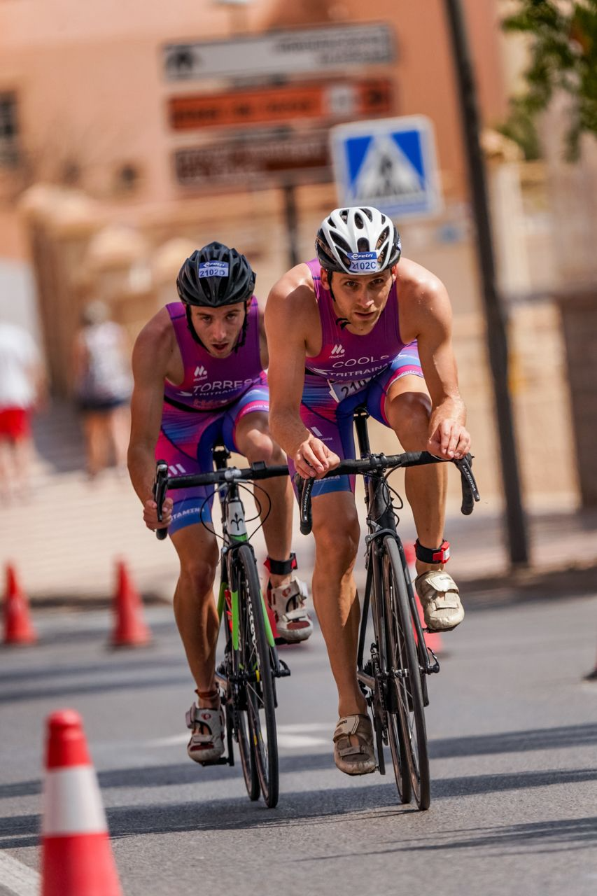

Masseur met een hart voor dieren
Fernand Cools is niet alleen een gepassioneerd masseur, maar ook een echte dierenvriend. Hij vangt regelmatig staarthonden op en geeft ze een tweede kans op een warm thuis. Naast zijn werk als masseur studeert hij Toegepaste Informatica aan de UCLL. Voorheen was hij actief als model en zijn er zelfs twee standbeelden van hem te bewonderen in het museum van Utrecht.
Van verpleger naar masseur

Jarenlang werkte Fernand Cools in Nederland als verpleegkundige in de ouderenzorg, waar hij met toewijding en empathie voor anderen zorgde. Na zijn verhuizing naar Spanje besloot hij zich om te scholen tot masseur, gedreven door dezelfde passie om mensen te helpen. Voor Fernand is welzijn meer dan alleen fysieke gezondheid: Het is een totaalervaring van ontspanning en herstel.
Triatleet met een passie voor wielrennen
Fernand Cools is triatleet bij TriTrain4You Málaga en heeft een grote passie voor de sport, met een speciale liefde voor wielrennen. Hij reist door heel Spanje samen met zijn partner, om met zijn ploeg deel te nemen aan wedstrijden. Of het nu op de fiets, in het water of op de hardloopschoenen is, zijn doorzettingsvermogen en discipline maken hem een gedreven atleet.